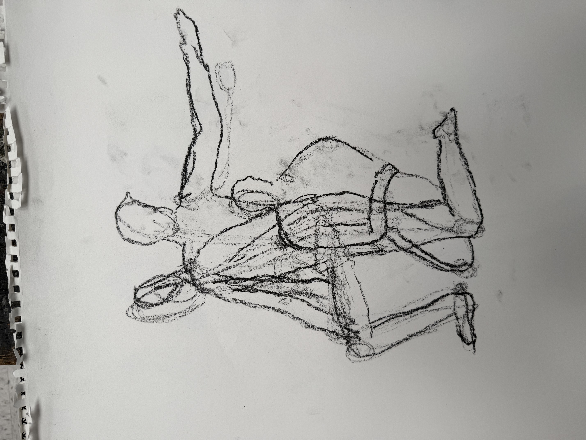
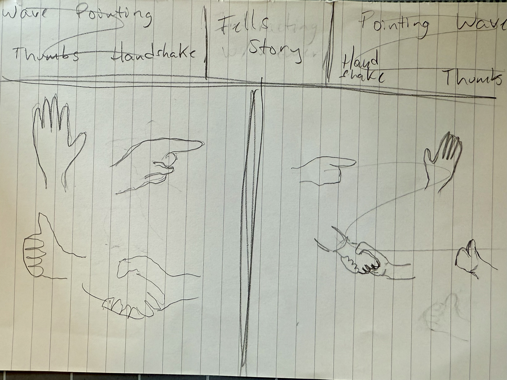

Cabinet of Anatomy
Process fragments
Fragments and process materials collected from the studio. Click on a drawer to explore figure studies and anatomical investigations.

Process Fragments Collection

Smudge

Paper

Lines

Tape

Residue

Designs